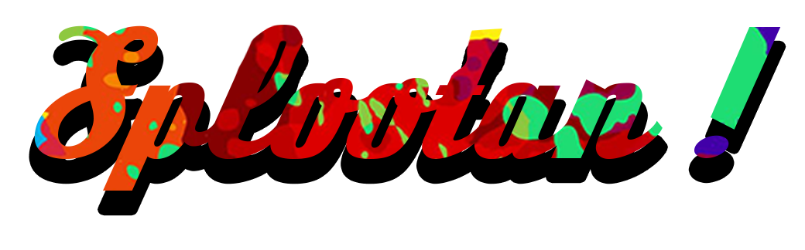

Splootan propose aux joueurs d'utiliser différents pistolets à peinture pour révéler progressivement des statues cachées sous un matériau transparent.

Splootan propose aux joueurs d'utiliser différents pistolets à peinture pour révéler progressivement des statues cachées sous un matériau transparent.
Dans Splootan, le joueur évolue dans un musée et projette de la peinture sur les statues pour en révéler la forme cachée. En début de partie, une statue à rechercher est imposée au joueur qui doit la retrouver parmi les autres exposées dans le musée.
Les statues sont sur des socles rotatif ce qui rend leur distinction plus complexes

Les statues sont dispersé dans plusieurs sales du musée, un temple maya, une église et même un observatoire pour regarder les étoiles.
Les alarmes à incendie peuvent effacer la peinture déjà appliquée. Le joueur doit réussir à retenir la position des statues déjà révélées.

Splootan utilise des shaders pour simuler l'épaisseur de la peinture.
La peinture peut couler grâce à une méthode de stockage de coordonées dans un JSON.